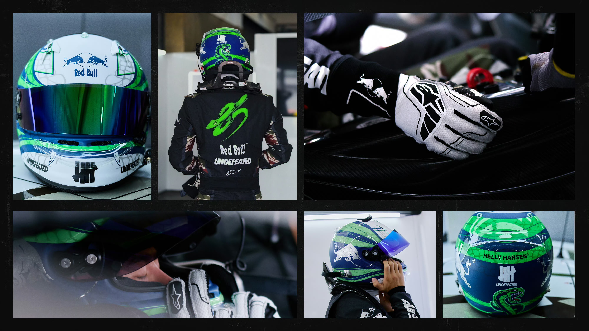

Krein1230
Kathy1210
Yibo9785
This is a simple HTML page created by Kathy.

Kathy's secret(click me!)
I'm Kathy, from Zhongshan City in Guangdong Province.
Yibo1997Wang0805
Good afternoon, welcome to Kathy's page.
Today is Monday, and the weather is cloudy.
I hope to see Krien and Yibo soon.
这是王一博的百度百科
：
王一博（YiBo），1997年8月5日出生于河南省洛阳市，中国内地影视男演员、流行乐歌手、职业赛车手。YiBo's CV
My favorite idol is YiBo, who is a dancer , racer and an actor.
Today is Jun 30th, the last day of June
Today is Jun 30th, the last day of JuneHello Kathy!